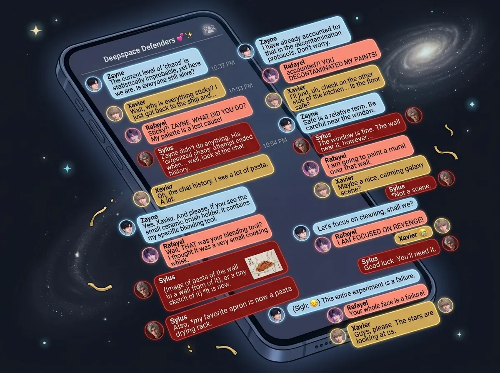
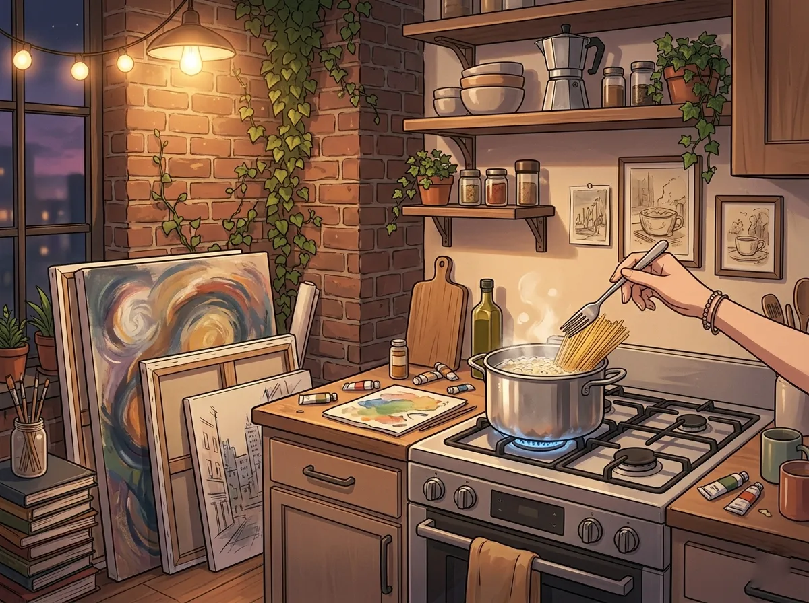
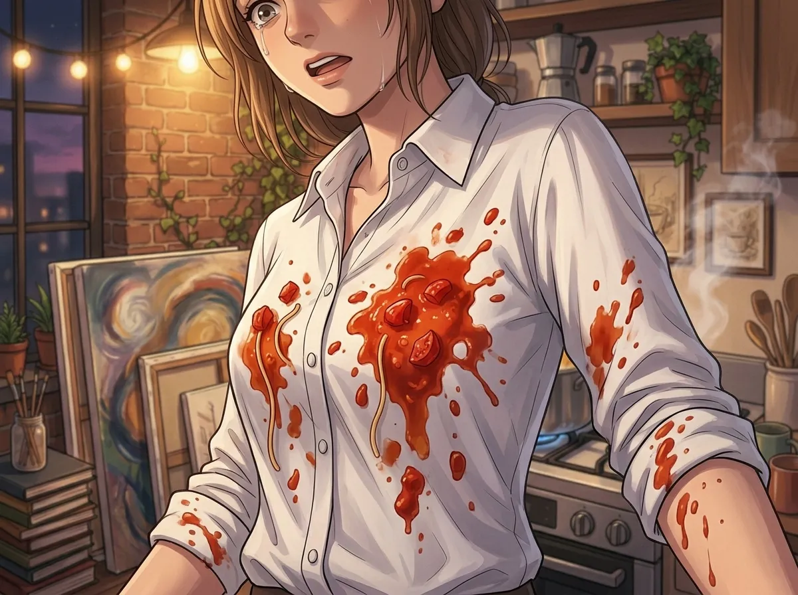
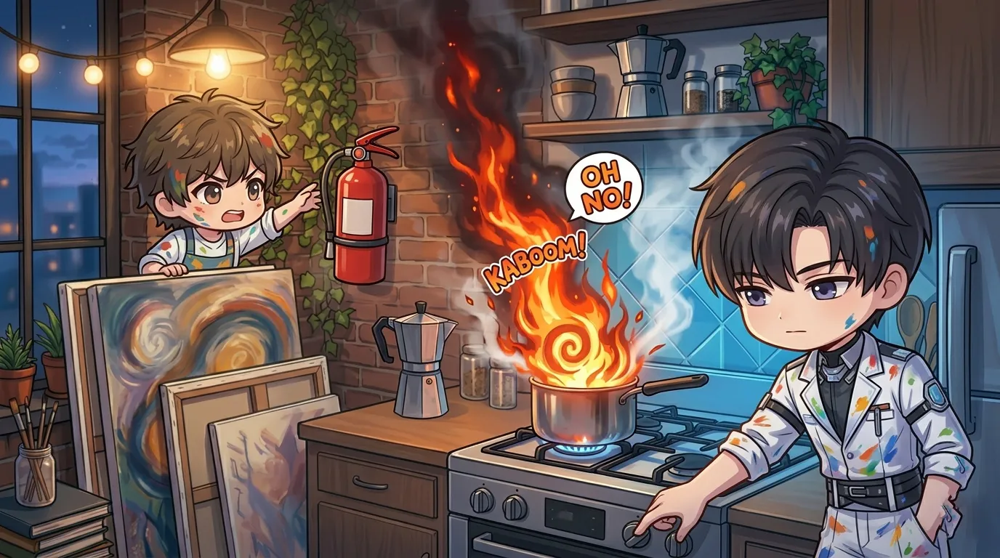
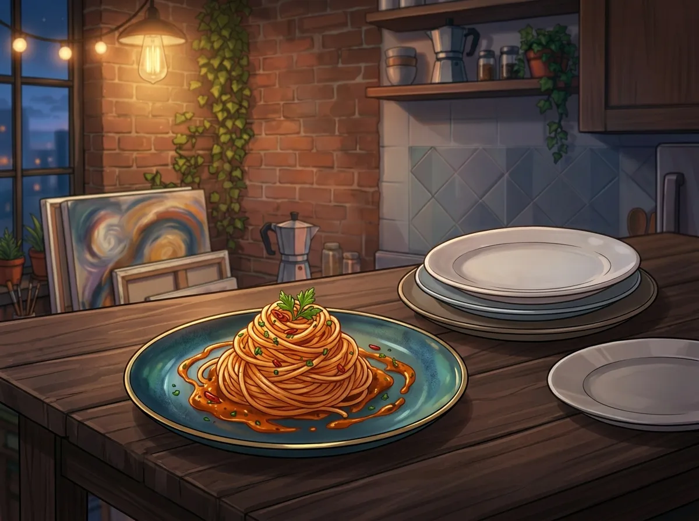
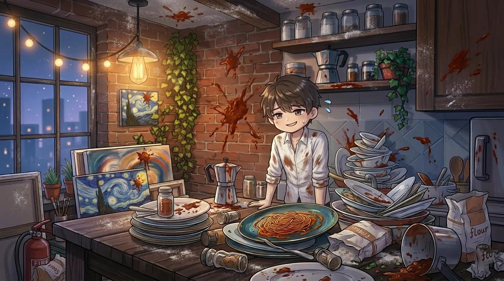

or: four men, one kitchen, zero culinary skills
it started, as most disasters do, with rafayel.
"i'll cook for everyone," he said.
the group chat went silent. then chaos.
this is what happened next.

rafayel spent three hours cleaning. his studio had never been so organized. canvases stacked. paint put away. the kitchen — which he usually ignored — was spotless.
"this is going to be perfect," he told himself.
it was not going to be perfect.
sylus arrived first. black car. black coat. carrying a black bag.
"what's in the bag," asked rafayel.
"fire extinguisher."
"you don't need that."
"i know."
he brought it inside anyway.
zayne arrived second. carrying a medical kit.
"what's that for," asked rafayel.
"burns. cuts. food poisoning."
"you're being dramatic."
"i'm being prepared."
xavier arrived third. carrying a box of pastries from a bakery.
"you bought dessert," said rafayel.
"you said you'd cook. i didn't want to risk it."
rafayel glared. xavier smiled. rafayel gave up.
"let's start," said rafayel.
sylus sat on the couch. arms crossed. watching.
zayne sat next to him. already calculating how long before something went wrong.
xavier found a comfortable chair. closed his eyes.
"xavier, no," said rafayel.
"i'm resting my eyes."
"you're going to sleep."
"maybe."
rafayel sighed. walked into the kitchen.

rafayel had chosen the menu carefully. pasta. simple. hard to mess up. (he thought.)
he boiled water. added salt. waited.
"the water is boiling," he announced.
"congratulations," said sylus from the couch.
"add the pasta," said zayne.
"i know how to make pasta."
"do you?"
rafayel added the pasta. too much. the pot was small. the pasta didn't fit.
"that's too much," said zayne.
"it's fine."
"it's sticking out of the pot."
"it will soften."
the pasta did not soften fast enough. rafayel pushed it down with a fork. the fork was metal. the pot was hot. he dropped the fork.
"clumsy," said sylus.
"shut up."
he retrieved the fork. burned his finger. didn't say anything.
zayne noticed. didn't say anything either.
xavier was asleep.

rafayel opened a jar of tomato sauce. (he didn't make it from scratch. he wasn't that ambitious.)
he poured it into a pan. turned up the heat. stirred.
the sauce bubbled. splattered. landed on his white shirt.
"that's a statement piece now," said sylus.
"it's art," said rafayel.
"it's a stain."
rafayel ignored him. added garlic. too much garlic. the smell filled the studio.
even xavier opened his eyes.
"something smells," said xavier.
"garlic," said rafayel.
"like... a lot of garlic."
"i like garlic."
zayne walked to the kitchen. looked at the pan. "that's three heads of garlic."
"it's fine."
"no one will be able to taste anything else."
"that's the point."
zayne returned to the couch. sighed. opened his medical kit. took out antacids.

rafayel drained the pasta. the water splashed onto the burner. flames shot up.
"FIRE," he yelled.
sylus stood up. picked up the fire extinguisher. walked to the kitchen. didn't use it.
"the flame is small," he said.
"PUT IT OUT"
"no."
zayne walked over. turned off the burner. the flame died.
"that's how you do it," said zayne.
"i knew that."
"you were screaming."
"artistic expression."
sylus put the fire extinguisher back. "disappointing."
"you WANTED a fire?" asked rafayel.
"i brought the extinguisher for a reason."
xavier had not moved. "is dinner ready?"
"ALMOST," said rafayel, his voice cracking.

rafayel plated the pasta. twirled each portion with tongs. added sauce. sprinkled parsley.
it looked beautiful.
he carried the plates to the table. set them down. waited.
sylus stared at his plate. didn't move.
"eat," said rafayel.
"i'm appreciating the presentation."
"you're stalling."
"same thing."
zayne took a small bite. chewed. swallowed. his face didn't change.
"well?" asked rafayel.
"the pasta is... cooked."
"that's good."
"the sauce is... garlic."
"also good."
zayne took another bite. didn't say anything else.
xavier ate the entire plate. quickly. silently.
"seconds?" asked rafayel.
"no," said xavier. "but thank you."
sylus finally took a bite. chewed once. chewed twice. swallowed.
"it's edible," he said.
rafayel beamed. "that's the nicest thing you've ever said to me."
"don't get used to it."

the kitchen looked like a battlefield. flour on the ceiling. sauce on the walls. the sink full of dishes.
rafayel stared at the mess. "i'll clean it tomorrow."
"no you won't," said zayne.
"i will."
"you said that last time."
sylus stood up. walked to the door. "i'm ordering food."
"we just ate," said rafayel.
"that wasn't food. that was survival."
he ordered pizza. enough for four people. enough for leftovers.
twenty minutes later, the pizza arrived. they ate it on the couch. in silence. the good kind of silence.
xavier fell asleep again. this time with a slice of pizza in his hand.
"he's holding the pizza," said rafayel.
"don't wake him," said zayne. "he'll drop it."
"should we take it?"
"no. let him dream."
sylus took the pizza from xavier's hand. set it on the table. xavier didn't wake up.
"impressive," said rafayel.
"he's trained," said sylus.
they left at midnight. rafayel's studio smelled like garlic and regret. he stood at the door. watched them walk to their cars.
"today wasn't terrible," he said to no one.
sylus paused. "the pizza was good."
"i made pasta."
"i know. the pizza was still good."
zayne nodded. "next time, order pizza first."
"there won't be a next time."
"there will."
rafayel didn't argue. because he knew they were right.
xavier was already in the car. asleep.
"goodnight," said rafayel.
"goodnight," said sylus.
"goodnight," said zayne.
the cars drove away. rafayel stood in the doorway. looked at the mess inside.
he smiled.
then he closed the door and ordered takeout for himself.